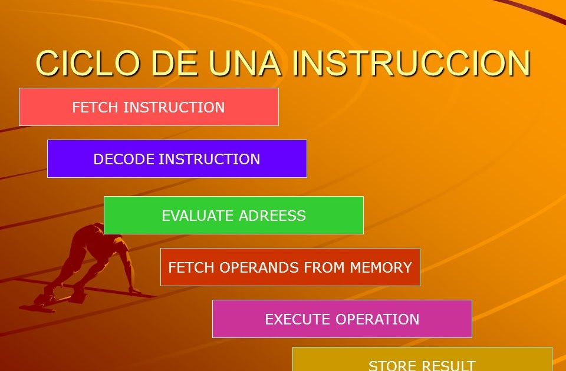

Estructura y funcionamiento del CPU
Para regresar al inicio,da click aqui
2.1 ORGANIZACION DEL PROCESO
Un procesador, incluye tanto registros visibles por el usuario como registros de control/estado.
a) Los registros visibles por el usuario pueden ser de uso general o tener una utilidad especial.
b) Los registros de control y estado se usan para controlar el funcionamiento del procesador
Los procesadores utilizan la segmentación de instrucciones para acelerar la ejecución.
La segmentación de cauce se puede dividir en ciclo de instrucción en varias etapas separadas que operan secuencialmente, tales como;
• Captación de instrucción
• Decodificación de instrucción
• Cálculo de direcciones de operando
• Ejecución de instrucción
• Estructura del operando resultado
2.2 ESTRUCTURA DE REGISTROS
Se emplean para controlar las instrucciones en ejecución,manejar direccionamiento
de menoria y propiciar la capacidad aritmética.
2.2.1 REGISTROS VISIBLES PARA EL USUARIO
Son aquellos que pueden ser referenciado por medio del lenguaje maquina que ejecuta la CPU
• Registros de propósito general, son aquellos que pueden guardar tanto datos como direcciones
• Registro de datos, que pueden ser asignados por el programador a diversas funciones. En algunos casos son de
propósito general y pueden ser empleados por cualquier instrucción de máquina que lleve a cabo operaciones sobre los datos.
• Registros de direcciones, contienen direcciones en la memoria principal de datos y este tipo de registro
puede ser de propósito general o estar a un modo específico de direccionamiento.
• Códigos de condición, también conocidos como indicadores o flags. Los códigos de condición,
son bits activados por el procesador como resultado de determinadas operaciones
2.2.2 REGISTRO DE CONTROL Y DE ESTADOS
Se utilizan para controlar las operaciones del procesador, la mayor parte de
estos registros no son visibles al usuario y algunos pueden ser accesibles a las instrucciones de maquina ejecutadas en un modo de control.
• Registro de direcciones de memoria (MAR), el cual contiene la dirección en donde se efectuará la próxima lectura
o escritura de datos. El numero de direcciones depende del tamaño de la MAR.
• Registro de datos de memoria (MBR), contiene los datos que van a ser escritos en la memoria o los que fueron leídos en ella.
• Registro de direcciones de entrada y salida (I/O AR), especifica al dispositivo ya sea de entrada o salida
• Registro de datos de entrada y salida (I/O BR), es una área temporal en donde se lleva a cabo el intercambio
de datos entre el procesador y el dispositivo de entrada y salida que esta especificado en IOAR.
• Registro de instrucciones (IR), contiene la dirección de la siguiente instrucción que se va a ejecutar.
• Palabras de estado del programa (PSW), contiene códigos de condición junto con otras informaciones de
estado como el signo, acarro, desbordamiento, entre otras.
2.2.3 EJEMPLOS DE REGISTRO DE CPU REALES
En algún diseño concreto de procesador es posible encontrar otros registros relativos a estado y control.
Puede existir un puntero a un bloque de memoria que contenga información de estado adicional
(por ejemplo, bloques de control de procesos). En las máquinas que usan interrupciones vectorizadas puede existir
un registro de vector de interrupción. Si se utiliza una pila para llevar a cabo ciertas funciones
(por ejemplo, llamada a subrutina), se necesita un puntero de pila del sistema. En un sistema de memoria virtual
se usa un puntero a la tabla de páginas. Por último, pueden emplearse registros para el control de operaciones de E/S.
En el diseño de la organización de los registros de control y estado entran en juego varios factores.
Una cuestión primordial es el soporte del sistema operativo. Algunos tipos de información de control son
de utilidad específica para el sistema operativo. Si el diseñador del procesador posee una comprensión funcional
del sistema operativo que se va a utilizar, la organización de los registros puede adaptarse hasta cierto punto
a ese sistema operativo. Otra decisión importante en el diseño es la distribución de información de control entre registros y memoria.
Es frecuente dedicar los primeros (más bajos) pocos cientos o miles de palabras de memoria para fines de control.
El diseñador debe decidir cuánta información de control debiera estar en registros y cuánta en memoria.
Se presenta el compromiso habitual entre coste y velocidad.
2.3 CICLO DE INSTRUCCION
El ciclo de instrucciones (también conocido como ciclo de ejecución o ciclo de fetch-decode-execute)
es el ciclo que sigue la unidad central de procesamiento (CPU) desde el arranque hasta que la computadora se apaga
para procesar las instrucciones.. Se compone de tres etapas principales: la etapa de obtención, la etapa de decodificación
y la etapa de ejecución.
En las CPU más simples, el ciclo de instrucción se ejecuta secuencialmente, y cada instrucción se procesa antes de que
se inicie la siguiente. En la mayoría de las CPU modernas, los ciclos de instrucciones se ejecutan simultáneamente y,
a menudo, en paralelo, a través de un canal de instrucciones: la siguiente instrucción comienza a procesarse antes de que
finalice la instrucción anterior, lo que es posible porque el ciclo se divide en pasos separados.
2.3.1 CICLO FETCH-DECODE-EXECUTE
Un ciclo de instrucción (también llamado ciclo de fetch-and-execute o ciclo de fetch-decode-execute en inglés)
es el período que tarda la unidad central de proceso (CPU) en ejecutar una instrucción delenguaje máquina.
Comprende una secuencia de acciones determinada que debe llevar a cabo la CPU para ejecutar cada instrucción en un programa.
Cada instrucción del juego de instrucciones de una CPU puede requerir diferente número de ciclos de instrucción para su ejecución.
Un ciclo de instrucción está formado por uno o más ciclos máquina.
2.3.2 SEGMENTACION DE INSTRUCCION
La segmentación de instrucciones es una técnica que permite implementar el paralelismo a nivel de instrucción
en un único procesador. La segmentación intenta tener ocupadas con instrucciones todas las partes del procesador dividiendo
las instrucciones en una serie de pasos secuenciales que efectuarán distintas unidades de la CPU, tratando en paralelo
diferentes partes de las instrucciones. Permite una mayor tasa de transferencia efectiva por parte de la CPU que la
que sería posible a una determinada frecuencia de reloj, pero puede aumentar la latencia debido al trabajo adicional
que supone el propio proceso de la segmentación.
2.3.2 CONJUNTO DE INTRUCCIONES
CARACTERISTICAS Y FUNCIONES
La segmentación de instrucciones es similar al uso de una cadena de montaje en una fábrica de manufacturación.
En las cadenas de montaje, el producto pasa a través de varias etapas de producción antes de tener el producto terminado.
Cada etapa o segmento de la cadena está especializada en un área específica de la línea de producción y lleva a cabo
siempre la misma actividad. Esta tecnología es aplicada en el diseño de procesadores eficientes. A estos procesadores
se les conoce como pipeline processors. Estos están compuestos por una lista de segmentos lineales y secuenciales en
donde cada segmento lleva a cabo una tarea o un grupo de tareas computacionales. Los datos que provienen del exterior
se introducen en el sistema para ser procesados. La computadora realiza operaciones con los datos que tiene almacenados
en memoria, produce nuevos datos o información para uso externo.
Las arquitecturas y los conjuntos de instrucciones se pueden clasificar considerando los siguientes aspectos:
Almacenamiento de operandos en la CPU: dónde se ubican los operandos aparte de la memoria.
Número de operandos explícitos por instrucción: cuántos operandos se expresan en forma explícita en una
instrucción típica. Normalmente son 0, 1, 2 y 3.
Posición del operando: Cómo se especifica la dirección de memoria (modos de direccionamiento disponibles).
Operaciones: Qué operaciones están disponibles en el conjunto de instrucciones.
2.3.4 MODO DE DIRECCIONAMIENTO
El campo de operación de una instrucción especifica la operación que se debe realizar.
Esta debe ser ejecutada sobre algunos datos almacenados en registros del computador o en palabras de memoria,
es decir, sobre los operandos. El modo de direccionamiento especifica la forma de interpretar la información
contenida en cada campo de operando para localizar, en base a esta información, el operando.
2.4 CASOS DE ESTUDIO DE CPU REALES
I-8086: Los registros del procesador, se usan para contener los datos con que se está trabajando puesto
que el acceso a los registros es mucho más rápido que los accesos a memoria. Se pueden realizar operaciones aritméticas y lógicas,
comparaciones, entre otras. Los modos del 8086 son indirectos por registro, indexados o directos por registro.
Motorola 68000: El mismo direccionamiento lleva implícito el tipo de registro sobre el que trabaja (direcciones o datos)
. Está basado en dos bancos de 8 registros de 32 bits. Un banco es de datos (Dn) y el otro de punteros (An). Además contiene un contador
de programa de 32 bits y un registro de estado de 16 bits.
80386: Para este microprocesador existe un modo nuevo que requiere un byte adicional denominado SIB (escala, índice, base) que se
añade al byte de operandos, es útil para direccionar elementos de vectores de longitudes diferentes en bucles. Es una alternativa
a los modos autoindexados que esta máquina no soporta.
